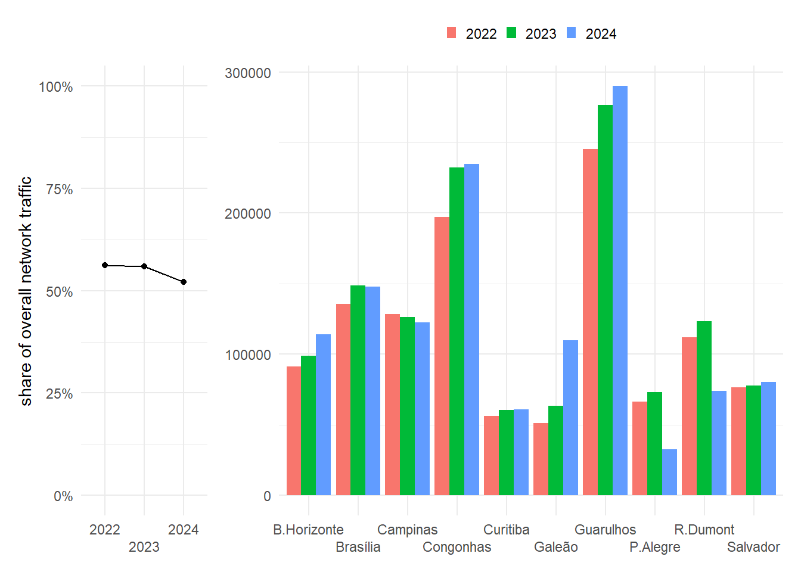
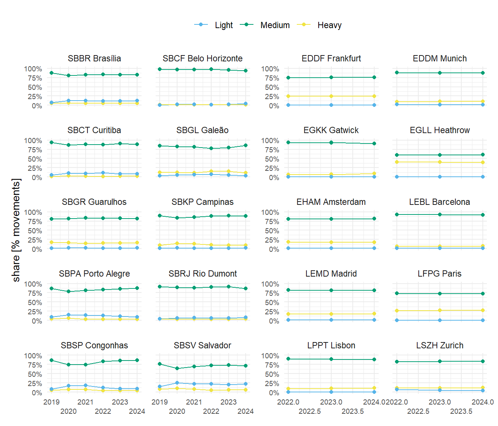

4 Traffic Characterisation
To facilitate operational comparisons, it is crucial to have a good understanding of the level and composition of air traffic. The preceding section provided an overview of the context and organisation of air navigation services in Brazil and Europe. This chapter presents some air traffic characteristics for both regions to provide a framework for the observed operational performance in subsequent parts of the report.
4.1 Network Level Air Traffic
Figure 4.1 shows the regional traffic development in Brazil and Europe.
For Brazil, it is important to remember that Figure shows the aggregated movements per airport at the whole network level. The shown total does not necessarily reflect the total number of flights. Another important observation related to the data is that Brazil’s number of airports served with the TATIC tool (Tower ATC System) has increased. Despite raising the processed total daily flight number, this difference is mostly transparent for this study as these additional airports handle only a small number of movements on a day-to-day basis.
TO BE CLEANED LATER
- reduce number of labels for BRA
- add associated labels to EUR
Brazilian air traffic continues to exceed 2019 levels, marking a phase of real growth, not just post-pandemic recovery. Since 2022, traffic has grown steadily, showing a structured recovery in demand. However, commercial aviation is still adjusting its route network in some regions to fully match 2019 levels.
Figure 4.1 showing the daily evolution of air traffic in Brazil (7-day moving average) highlights the busiest and quietest periods of recent years. Over the past three years, the day with the lowest average traffic in Brazil typically falls on the Wednesday after Carnival. Meanwhile, the annual peak usually happens in late December, close to Christmas, reinforcing a well-established seasonal pattern in the Brazilian air transport market.Overall, despite short-term fluctuations, the general trend is upward, confirming that Brazil is on a steady growth path. It is important to note that the Brazilian data only includes commercial flights (excluding general and military aviation) and is based on UTC time.
When we compare this with the European Region, a different dynamic becomes visible. In terms of total network-level air traffic, Europe still lags behind its pre-pandemic levels. However, if current trends continue, the region is expected to reach or slightly surpass 2019 traffic levels by 2025. Low-cost carriers have outperformed mainline airlines in the recovery phase. Their business model allowed for faster adjustments in staffing, crewing, and servicing. At the same time, national support programs for legacy carriers often included conditions such as slot restrictions or reduced domestic operations, which contributed to a decrease in overall network connectivity and frequency between airports.

Figure 4.2 compares the evolution of daily air traffic in the Brazil and European regions across the last three years. Each line represents a 7-day moving average of flight numbers, allowing seasonal patterns and year-over-year changes to be visualized clearly.
In the Brazilian region, the data shows a consistent upward trend, with each year positioned above the previous one, especially in the first and second quarters. This indicates that Brazil’s aviation sector not only recovered from the pandemic but has entered a period of sustained organic growth. The seasonal curve in Brazil is more stable throughout the year, reflecting a demand pattern that is less affected by strong seasonal variations.
In contrast, the European region displays strong seasonality, with pronounced peaks during the summer months (June to September) and sharp drops in winter. This pattern aligns with Europe’s tourism-driven traffic, where demand is concentrated in holiday periods. While traffic levels have improved, the variation between seasons remains substantial.
The analysis of annual trends also reveals how regional disruptions can impact national networks. In Brazil, traffic volume dropped significantly in May 2024, due to heavy rainfall in the south starting in late April. The floods led to the prolonged closure of Salgado Filho International Airport (SBPA) in Porto Alegre, which remained out of operation until October. This disruption had a clear impact on domestic commercial aviation and reduced overall national traffic during that period.
While Brazil shows less seasonal fluctuation overall, Europe’s variation in traffic volume is much more pronounced. This contrast points to the importance of adjusting capacity and optimizing airport infrastructure to better respond to periods of high demand.
4.2 Airport Level Air Traffic
The previous section showed the air traffic development on the network level. As airports represent nodes in this overall network, changes to the overall traffic situation will ripple down to the airport level. This demand on terminal and airport air navigation services forms a substantial input to understand how the operational performance measures in this report developed over time for the selected study airports. This reports looks in particular at the performance levels observed at 10 key airports in each region (c.f. scope)



Note
xxxxxx The suggestion is to insert the fifth europe airport eith 2023 and 2024 levels.named this airport on the text.
The figure shows the monthly evolution of traffic at Guarulhos International Airport (SBGR) during 2023 and 2024, which remains the top airport in Brazil. A steady increase in operations can be seen throughout 2024 compared to 2023, with July standing out as the month with the highest volume during the period analyzed. This trend reflects the continued strengthening of commercial aviation at Brazil’s main hub, both for domestic and international flights. Guarulhos’ performance becomes even more relevant when compared to the busiest airports in Europe. The fifth busiest airport in Europe in 2024 had traffic levels similar to those of Guarulhos, highlighting the different realities of each region. This comparison helps illustrate the structural complexity and differences between the two systems. While Brazil concentrates much of its traffic in a few key airports like SBGR, Europe spreads its operations across a larger network of major airports, often with more robust infrastructure (such as more runways). Therefore, direct comparisons between the “top 1” airports in each region may not accurately reflect their unique operational contexts.
Analyzing the movement of the leading Brazilian airports, it is evident that they were not responsible for the return to 2019 levels, considering that only Campinas - SBKP and Santos Dumont - SBRJ slightly exceeded 2019 levels. This phenomenon can be explained by the greater difficulty of airlines in resuming activity in contrast to general/business aviation. This last share is an essential component of the Brazilian air movement but is a rare user of main airports.

The 2024 air traffic analysis highlights the importance of understanding the structural differences between the Brazilian and European networks. While Guarulhos (SBGR) remains the busiest airport in Brazil, its traffic volume is comparable to that of the fifth and sixth busiest airports in Europe— Munich and Gatwick. This shows that direct comparisons between the top airports in each region may not fully reflect their operational realities. Factors such as the number of runways, network architecture, and traffic density create unique operational complexities in each case.
::: callout note Graph is not clear. and is not appears Amsterdan, Heatrow and Paris levels :::
In Brazil, the largest traffic drop in 2024 occurred at Porto Alegre Airport (SBPA), which was directly impacted by major flooding in May and remained closed until October. Many flights were redirected to nearby airports in southern Brazil, which are not included in the scope of this comparison with Europe.Another change was the increase in traffic at Galeão International Airport (SBGL), which rose to sixth place among Brazil’s busiest airports. This shift was mainly driven by restrictions applied at Santos Dumont Airport (SBRJ), leading to a reallocation of flights from SBRJ to SBGL. As a result, SBRJ saw a decline, while SBGL experienced gradual growth in operations. This redistribution not only affects annual totals but will also have direct impacts on other indicators, such as the peak day of operations, which will be discussed later in this report.
In addition, the share of total traffic handled by the top airports in Brazil has shown a slight downward trend from 2022 to 2024, suggesting a modest redistribution of traffic across a broader set of airports. This may result from regional recovery, airline strategy shifts, or temporary infrastructure limitations—such as the closure of SBPA and the restrictions at SBRJ.
In contrast, in Europe, the share of traffic managed by the busiest airports has shown a slight increase over the same period. This upward movement reflects a temporary concentration of demand as the region works toward pre-pandemic recovery levels, particularly through well-established hubs. Importantly, none of the airports included in this report experienced a decline in traffic, with Madrid and Barcelona recording substantial growth close to 20%, and Gatwick rising by more than 10%, reinforcing their position within the European network.
Altogether, the data illustrates how both the Brazilian and European air networks have adapted to their respective challenges. In Brazil, the system has shown resilience in the face of environmental events and regulatory changes, while in Europe, traffic growth is becoming more concentrated at major hubs as the region continues to recover toward pre-pandemic levels. These dynamics highlight the importance of continuous monitoring and flexible planning to ensure operational efficiency and network stability in both regions.
#| label: fig-bra-gru-apt
#| fig.cap: Guarulhos monthly traffic
.apt = "SBGR"
.years = c("2023","2024")
airport_per_year(.apt, .years)
Note
xxxxxx The suggestion is to insert the sixth europe airport - munich?? with 2023 and 2024 levels.
?fig-bra-gru-apt shows the monthly evolution of traffic at Guarulhos International Airport (SBGR) during 2023 and 2024, which remains the top airport in Brazil. A steady increase in operations can be seen throughout 2024 compared to 2023, with July standing out as the month with the highest volume during the period analyzed. This trend reflects the continued strengthening of commercial aviation at Brazil’s main hub, both for domestic and international flights.
Guarulhos’ performance becomes even more relevant when placed in a global context. In 2024, Munich (MUC)—the fifth busiest airport in Europe—recorded approximately 50,000 more operations than SBGR, highlighting the different realities and scales of each region. This comparison helps illustrate the structural complexity and operational differences between the two systems. While Brazil concentrates a large share of its traffic in a few key airports like SBGR, Europe spreads its operations across a wider network of major airports, often supported by more robust infrastructure, such as multiple runways. Therefore, direct comparisons between the “top 1” airports in each region may not fully reflect their distinct operational and geographic contexts.
4.3 Peak Day Traffic
While the annual traffic provides insights in the total air traffic volume and the associated demand, it does not provide insights on the upper bound of achievable daily movement numbers. The latter depends on demand, operational procedures and/or associated constraints, and the use of the runway system infrastructure. The peak day traffic is determined as the 99th percentile of the total number of daily movements (arrivals and departures). The measure represents thus an upper bound for comparison purposes.
4.4 Peak Day

Figure 4.6 shows the evolution of peak day traffic between 2022 and 2024 across the Brazilian airports included in this study, serving as a useful complement to average daily movement metrics.
Overall, the data shows a general stability in operational volumes across most major airports in Brazil. Still, some variations stand out:
Guarulhos (SBGR), Galeão (SBGL), and Confins (SBCF) recorded increases in their peak day movements, reflecting their greater capacity to absorb traffic and some redistribution of demand within the national network.
Santos Dumont (SBRJ), on the other hand, shows a notable drop, directly tied to the operational restrictions implemented during 2024, which limited its capacity and led to the transfer of some flights to SBGL.
In the case of Porto Alegre (SBPA), even though it was severely affected by floods starting in May 2024, the data does not show a significant drop in its peak day value. This is likely because the peak occurred either before May or after limited operations resumed in October.
The comparison between the Brazilian and European contexts reinforces the importance of considering each network’s structure, operational model, and geographic distribution when evaluating airport performance. It also shows how peak day traffic can offer unique insights—especially during periods of recovery or transition—by highlighting the maximum operational load airports can reach, regardless of their average daily traffic.
::: callout note Is it possible to include rwy number on the graph of the last 3 years peak day? No peak day graphs for europe? :::

::: callout note For European with more than 2 runways it needs to be noted that the runway system does not support independent operations of all available runways. Thus, the serviced peak traffic is also impacted by the runway system configuration.
The measure signals the use of the available runway system. :::
#| label: fig-timeline-peak-day
#| fig-cap: Evolution of peak-day traffic at study airports
#| message: false
timeline_peak_day(c(2019:2024))
Note
CHECK - TIMELINE - REMOVED
The figure shows historical data from 2019 to 2024, providing a broader view of the recovery path in both regions. In Brazil, Guarulhos (SBGR) remains the busiest airport every year. Other airports—such as Congonhas (SBSP), Brasília (SBBR), Campinas (SBKP), and Confins (SBCF)—also show steady growth, with some already surpassing pre-pandemic levels. In Europe, xxxxxxxxx These insights show the importance of analyzing peak day traffic as a complementary indicator to average daily movements, especially during periods of recovery or operational adjustments. The comparison between Brazilian and European contexts highlights the need for assessments tailored to the reality of each network, considering the structural, operational, and geographic factors that directly affect airport responsiveness and capacity.
The year-to-year change of the peak day traffic between 2019 and 2022 is shown in @fig-timeline-peak-day.
For the European study airports, Frankfurt (EDDF), Munich (EDDM), Paris (LFPG), and Rome (LIRF) experienced a higher drop of the daily peak traffic in comparison to 2019.
Despite the not yet fully recovered demand situation at London Gatwick (EGKK) and Zurich (LSZH) showed a moderate reduction of the daily peak traffic in 2022.
This suggest that airports with limited airport runway capacity managed4.5 Fleet Mix

Figure 4.8 confirms the dominance of the “medium” aircraft category at the airports analyzed in both Brazil and Europe. Fleet mix plays a key role in airport capacity, directly impacting traffic flow and operational efficiency. Generally, a higher share of “heavy” aircraft can reduce runway throughput due to wake turbulence separation requirements and longer landing and takeoff times.
In Brazil, the main international hubs—Guarulhos (SBGR), Galeão (SBGL), and Campinas (SBKP)—showed a 15% to 20% share of “heavy” aircraft, reinforcing their role as the country’s key international gateways. Campinas, in particular, stands out as the main hub for Azul Linhas Aéreas and also handles a large volume of cargo operations, which contributes to its diverse fleet profile and operational complexity.
Some Brazilian airports such as Brasília (SBBR) and Salvador (SBSV) also reported a significant share of “light” aircraft, a category that is nearly absent among the European airports analyzed—except for Zurich (LSZH). In Salvador, light aircraft account for nearly 20% of all movements, and a similar pattern is observed in Campinas, reflecting their regional and logistical roles.
In contrast, major European hubs like Frankfurt (EDDF), Heathrow (EGLL), and Charles de Gaulle (LFPG) operate with a higher proportion of “heavy” aircraft, in line with their function as large-scale global connection points. These structural differences reflect how each region organizes its connectivity: Brazil tends to centralize long-haul operations in a few key airports, while Europe distributes them across a broader set of hubs.
Based on continuous monitoring throughout the year, this pattern has proven to be remarkably stable. The distribution of aircraft categories has remained consistent even during periods of disruption, such as extreme weather or localized infrastructure constraints. These observations suggest that the fleet mix at the analyzed airports is shaped more by long-term structural factors than by short-term fluctuations.

Note
fleet mix timeline is necessary?
On average, Figure 4.9 shows that the fleetmix remained fairly stable over the years. It is interesting to observe that the unprecedented decline in air transport during the pandemic phase did not substantially break this pattern. This suggests that the contraction of the traffic volume hit all segments at a similar rate 1.
4.6 Summary
This chapter provided a comprehensive overview of air traffic dynamics across Brazil and Europe, covering both network-wide and airport-level perspectives.
The data confirms that Brazilian air traffic has surpassed pre-pandemic levels, reflecting a phase of real growth, while Europe continues a gradual recovery, marked by strong seasonal peaks and a more fragmented network structure. If current trends persist, Europe is expected to return to pre-pandemic traffic levels by 2025, particularly driven by robust summer activity and the continued normalization of international demand. Despite these differences, both regions show signs of stability and resilience, even when affected by disruptions such as extreme weather or regulatory adjustments.
At the airport level, Brazilian traffic remains highly concentrated in a few major hubs, whereas Europe distributes operations more evenly across several national gateways. Events like the prolonged closure of Porto Alegre (SBPA) and restrictions at Santos Dumont (SBRJ) highlighted the sensitivity of localized operations and the capacity of the network to adapt.
The peak day analysis complemented the annual view by illustrating the operational limits reached under maximum demand. Although volumes remained stable overall, individual airports showed notable variations—either from growth, as in SBGL and SBCF, or contraction, as seen in SBRJ.
Finally, the fleet mix analysis reinforced the structural differences in how each region operates: Brazil shows a higher presence of light aircraft in some regional airports and a centralized model for long-haul traffic, while Europe maintains a broader use of heavy aircraft, consistent with its global connectivity model.
Together, these findings establish a base to understanding the operational performance indicators in the next chapters.
It must be noted that conceptually, the number of aircraft remained unchanged in the both regions. The higher utilisation of “heavy” aircraft for logistical support appeared to have offset the lower number international / long-haul passenger flights. For the first six month of 2023, this pattern is continued↩︎